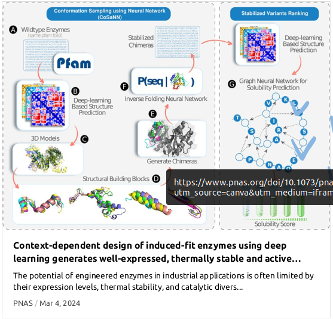

בס"ד Bs"d
🧬 Protein Engineering & Language
מחשב, צור לי כבשה - מדע גדול, בקטנה
#protein_language #protein_engineering #popular_science #review #5783 #2023
Context-dependent design of induced-fit enzymes using deep
learning generates well-expressed, thermally stable and active
enzymes. Zimmerman et al. PNAS 2024.
#protein_language #protein_engineering #science #paper #pnas #5784 #2024

Context-dependent design of induced-fit enzymes using deep
learning generates well-expressed, thermally stable and active
enzymes. Slides of a talk at ISRANALYTICA 5785 2025 Conference
#protein_language #protein_engineering #science #slides #talk #isranalytica #5785 #2025
#AI #biology #protein